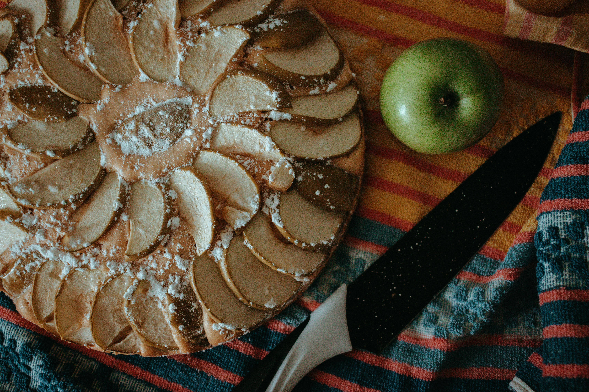

tarte aux pommes & miel
Une pâte feuilletée fine et croustillante, garnie de tranches de pommes légèrement caramélisées au four. Le miel apporte une touche de douceur naturelle qui sublime le goût des fruits. Parfait pour un dessert léger et raffiné, cette tarte se déguste aussi bien tiède que froide, accompagnée d'une boule de glace à la vanille ou d’un filet de crème fraîche.
cuisiner